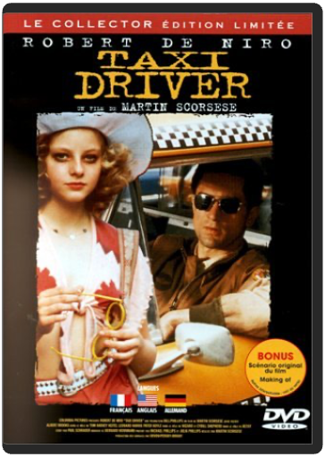
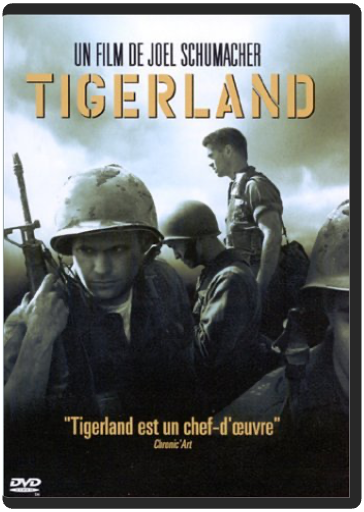
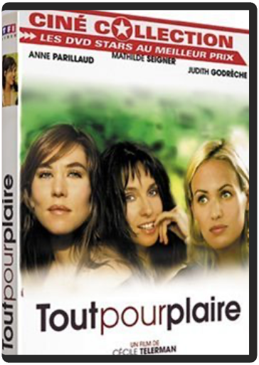
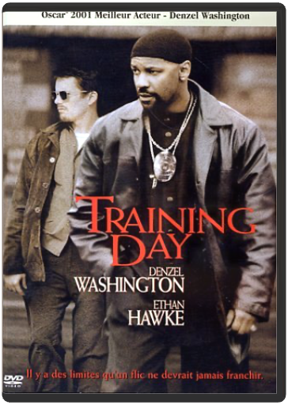
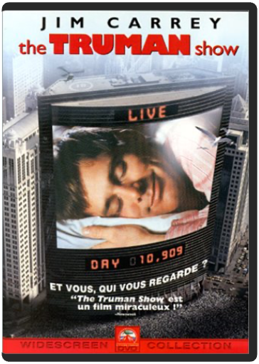
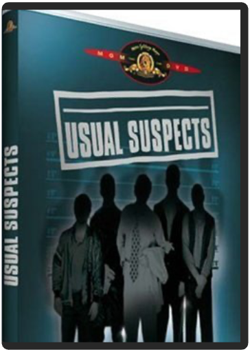

 taxi drivermartin scorsese  Taxi Driver est le portrait définitif au cinéma de la solitude et de l'aliénation et de leur traduction en violence. C'est comme si le réalisateur Martin Scorsese et son scénariste Paul Schrader avaient puisé exactement à la même source d'inspiration psychologique ("Je savais que je devais faire ce film", dira plus tard Scorsese) combinée à l'expression d'une anxiété individuelle, politique et sociale qui coïncide parfaitement avec l'après-Watergate. Robert De Niro, dans le rôle de Travis Bickle, l'ex-Marine devenu un chauffeur de taxi torturé, marqua l'histoire du cinéma grâce à une interprétation qui fait froid dans le dos tant elle est dense et convaincante. Travis Bickle s'est assigné comme tâche de redresser une humanité qu'il voit comme salie. Il joue à l'ange gardien pour une jeune prostituée (Jodie Foster), rôle dont les conséquences seront d'une violence dévastatrice. Ce chef-d'oeuvre, qui ne plaira pas forcément à tous les spectateurs, en choquera certains, mais il est difficile d'en contester l'importance et l'effet, qui ne se sont pas estompés avec le temps. —Jeff Shannon  tigerlandjoel schumacher Audacieux pari que de traiter une énième fois de la guerre et du Viêtnam, thèmes maintes fois abordés par les plus illustres cinéastes. Néanmoins, avec Tigerland, Joel Schumacher relève brillamment le défi et délivre un film intelligent, original et profondément réaliste. Intelligent en ce qu'il dénonce avec pertinence mais sans excès – non seulement la stupidité et l'inanité de la guerre et de son concept, mais aussi l'incohérence du gouvernement dans ses rapports avec les soldats. Original parce qu'il ne traite pas du conflit en tant que tel, mais de sa phase préparatoire, en mettant l'accent sur les souffrances psychologiques, plus que physiques, endurées par ces très jeunes recrues, enrôlées sans autre choix et transformées, soi-disant pour défendre la noble cause, en machine à tuer. Réaliste en ce que le réalisateur a pris le parti d'avoir recours à des acteurs pour la plupart méconnus (pour éviter toute idée reçue ou préconçue), d'éliminer tout artifice (maquillages, doublures…) et de tourner son film caméra 16 mm à l'épaule, pour accentuer l'aspect documentaire, plonger le spectateur dans l'intimité du camp et l'imprégner au mieux de la confusion et de la perte de repères des garçons, générant ainsi une symbiose rarement atteinte au cinéma. Emmené par une galerie de personnages éclectiques et représentatifs de la société, à commencer par le charismatique mais énigmatique Bozz, jouant habilement des rythmes et des ambiances sans jamais relâcher la tension générale, Tigerland est un témoignage musclé, intense et humain, qui tire avec outrecuidance les leçons d'un passé peu glorieux. —Frédéric Thorens  tout pour plairecécile telerman Trois trentenaires, parisiennes plutôt bourges, qui se posent des questions existentielles, déjà vu ? Peut-être, mais on se laisse vite embarquer à la suite de ces filles au fort capital sympathie, incarnées par des actrices charmantes et généreuses. La réalisatrice a le mérite de ne pas se prendre au sérieux, sans pour autant traiter son sujet à la légère, et donne naissance à des personnages consistants et à un beau trio, entre fous rires et coups de blues, petit frère des bandes de potes chères à Claude Sautet et à Yves Robert. La réussite du film tient aussi à son rythme alerte, enchaînant avec vivacité les dialogues percutants, et sans temps morts qui ne laisse aucun répit. Une comédie intelligente et tout public, comprenez : vivement conseillée aux hommes !  training dayantoine fuqua Un excellent polar – malgré un thème un peu rebattu – qui doit beaucoup au charisme de ses acteurs principaux, à l'efficacité de sa réalisation et à la maîtrise de son scénario. Plongée dans les mean streets de Los Angeles, Training Day repose sur un couple de flics antagonistes. D'un côté un "bleu", idéaliste, armé de bons sentiments et d'un sens de l'état de droit quelque peu naïf. C'est Ethan Hawk – Bienvenue à Gattaca – qui lui prête ses traits angéliques et magnétiques. À ses côtés, pour l'épauler, Denzel Washington – Hurricane Carter – incarne une véritable tête brûlée qui n'hésite pas à franchir la ligne jaune entre le milieu des bad boys et celui de la justice. Cheveux courts, bouc au menton, il est plus animal que les loups qu'il côtoie. Une impressionnante métamorphose, pour laquelle il a décroché l'oscar du meilleur acteur en 2002. Pour rendre compte des qualités du film, il faudrait également signaler la lumière de Mauro Fiore, qui contribue à basculer peu à peu cette journée d'entraînement dans les ténèbres de la destruction ; la véracité du scénario de David Ayer, un enfant des quartiers qu'il décrit ; les multiples seconds rôles de ces gueules cassées que sont Scott Glenn (L'Étoffe des héros) et Tom Berenger (Platoon), aux apparitions des rappers Dr Dre et Snoop Dogg, en passant par la chanteuse soul Macy Gray. Une remarquable réussite du genre qui allie réalisme et descente aux enfers avec maestria. —Sylvain Lefort |  Flynn, ex-programmeur informatique aigri, est vite devenu une star des salles de jeu ; ça tombe plutôt bien, car son ex-boss, soucieux de protéger un secret, se sert un beau jour d'un prototype expérimental pour dématérialiser le pauvre Flynn et l'envoyer à l'intérieur du système informatique de l'entreprise, où il ne devra son salut qu'à sa dextérité aux jeux vidéo... Succès mitigé à sa sortie en salle, ce spectacle d'avant-garde a gagné peu à peu son titre mérité de film culte ; spectacle d'une grande beauté visuelle, véritable tour de force technologique réalisé à l'époque des balbutiements de l'image de synthèse, Tron a bénéficié d'un scénario véritablement innovant, de l'apport esthétique d'artistes et de designers de talent (dont le Français Moebius), et doit en grande partie son succès à son ambiance unique, mélange de contemplation silencieuse et d'action haletante (la fameuse séquence de la course à moto) dans un univers tout en néons et en figures géométriques colorées. Le DVD était attendu depuis longtemps mais cela en valait la peine : plusieurs heures de bonus sont au rendez-vous, du documentaire d'une heure et demie aux making-of des effets spéciaux en passant par les commentaires et autres galeries de photos...—David Rault  the truman showpeter weir Le monde entier est aux aguets dès que Truman Burbank bouge le petit doigt. Sans que notre héros le sache, sa vie est depuis toujours un feuilleton sans fin auquel assiste le monde entier. Et tous ceux qu'il côtoie – y compris sa mère, son épouse, et son meilleur ami – sont en réalité des acteurs, rémunérés pour interpréter un rôle dans sa vie. Dans ce film intrigant et bizarrement émouvant qui date de 1998, l'auteur Andrew Niccol imagine une forme extrême de renommée, et la voit s'animer sous les traits de Jim Carrey, qui livre peut-être ici la meilleure performance de sa carrière. Il apporte au rôle une grande intensité comique et des émotions très sincères. Carrey est soutenu par une distribution exceptionnelle, où on retrouve Laura Linney et Ed Harris, mais le spectacle lui est entièrement dédié, et ce portrait apporte la démonstration de la vaste palette de ses talents. —Marshall Fine  usual suspectsbryan singer Depuis sa sortie en 1995, et un Oscar pour son scénario plein de circonvolutions, signé Christopher McQuarrie, Usual Suspects a divisé le monde des cinéphiles en deux camps. Tandis que certains continuent d'apprécier l'énigme centrale, désormais célèbre, du film ("Qui est Keyser Söze ?"), d'autres se sont montrés moins impressionnés par un film trop épris de ses propres subtilités pour être vraiment convaincant. Après tout, que doit-on penser d'une scène finale qui rend caduc le film tout entier ? La moitié du plaisir provient du débat que provoque le film ainsi que du bonheur pur de voir la distribution du film en action, menée, ou plutôt malmenée, par Kevin Spacey, le truand au pied bot qui raconte l'épopée du gangster hongrois Keyser Söze. Spacey appartient à une bande de voleurs parmi lesquels on retrouve Gabriel Byrne, Stephen Baldwin, Kevin Pollak et Benicio Del Toro, réunis pour dérober un important chargement de cocaïne. L'histoire est racontée sous la forme d'un vaste et tortueux flash-back par le personnage de Spacey à un détective (Chazz Palmintieri). Usual Suspects est très divertissant puisqu'il maintient le suspense jusqu'à la surprise finale. Que le dénouement démultiplie le plaisir ou le diminue, ce sera au spectateur de décider. Et même si en fin de compte tout cela est assez absurde, ce film est un thriller drôle et diabolique, qui plaira même à ses détracteurs. —Jeff Shannon |

Julien
Collection Total:
2 025 Items
2 025 Items
Last Updated:
Dec 25, 2023
Dec 25, 2023

 Made with Delicious Library
Made with Delicious Library